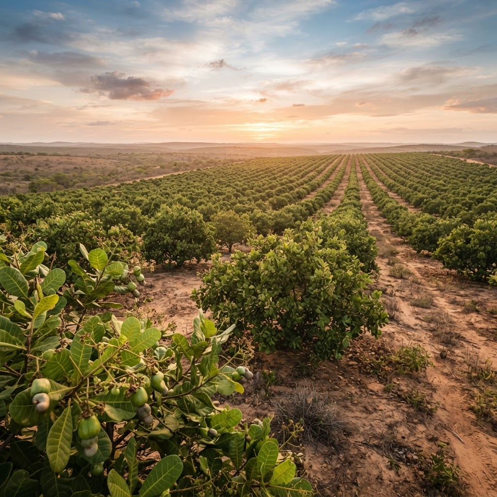
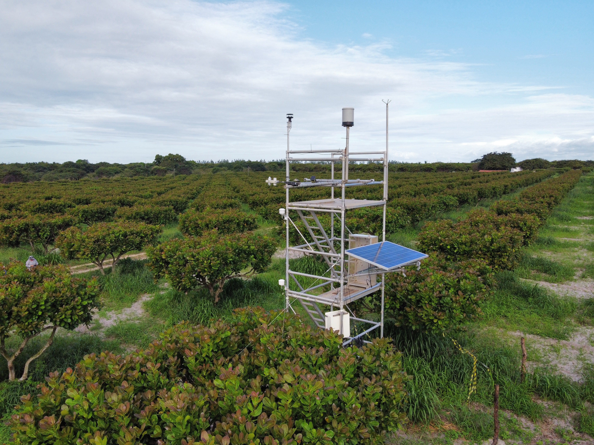

Projeto CajuCarbo
Quantificação e compreensão das interações entre o cultivo de caju, as condições ambientais e o carbono.

Ciência a serviço de uma cajucultura sustentável
O projeto CajuCarbo tem como objetivo determinar as emissões de gases do efeito estufa em sistemas de produção de caju, contribuindo para o Inventário Nacional de Emissões e apoiando a formulação de políticas ambientais e estratégias de mitigação de emissões em benefício da sociedade.
Para isso, o projeto monitora continuamente as relações entre o cultivo, a atmosfera, o solo, a água e o carbono, integrando medições de campo, análises laboratoriais e sensoriamento remoto.
Do dado científico à decisão ambiental
Determinar as emissões de gases do efeito estufa (GEE) em sistemas de produção de caju, destacando sua contribuição para o Inventário Nacional de Emissões e visando o auxílio à formulação de políticas ambientais e à proposição de estratégias de mitigação de emissões em benefício da sociedade.
Um fluxo científico do campo ao modelo
Da instalação em campo à modelagem dos dados, cada etapa é integrada para compreender as trocas de carbono e água no cultivo de caju.
Projeto em desenvolvimento
Os dados serão disponibilizados conforme as medições avançarem
O projeto encontra-se em fase inicial. As informações científicas — medições de campo, análises e resultados — serão publicadas de forma transparente à medida que forem obtidas e validadas. Os espaços ao lado reservam lugar para as fotografias de campo que serão adicionadas.